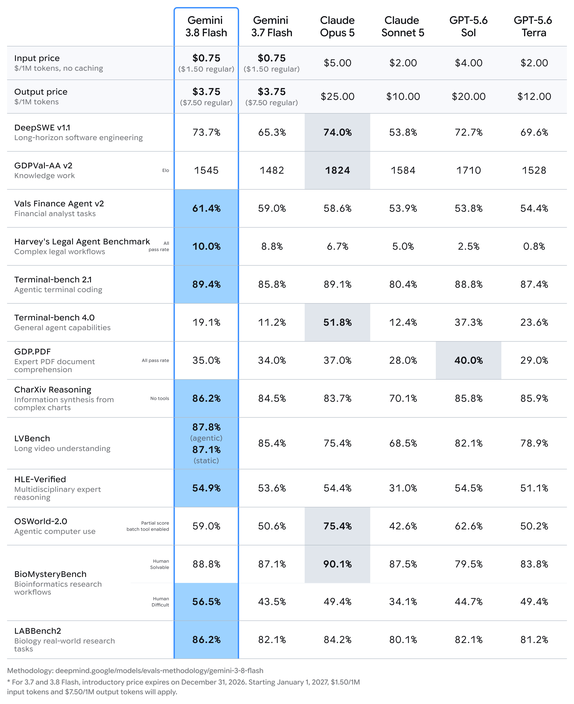

🔥🔥🔥
今日有新旗舰：Gemini 3.8 Flash
Google 发布 Gemini 3.8 Flash：面向软件工程与智能体的工作马模型，与 3.7 Flash 同速同入门价。同文 3.8 Flash Cyber 仅 Fairwind，不当一般旗舰。
- 日期
- 2026-09-02（官方 Sep 02）
- 库
- AI 观察
- 状态
- 一般可用 · 旗舰
今日有新旗舰：Gemini 3.8 Flash。今日有新 MCP/Skill 推荐：Baseten MCP + baseten-skills。主线是 Google 把 3.8 Flash 推到一般可用，以及《夜勤人2：无尽宝库》1.0 正式发售翻牌。
游戏开发空库未出 Tab。展会片单：今晚 State of Play 未播，不预写。Grok 4.7 仍为预告（估 ~9/12），不当今日旗舰。Anthropic / OpenAI / xAI / DeepSeek / Zhipu 窗内无新旗舰。
跨库最高 Attention 落在 Gemini 3.8 Flash 旗舰，以及《夜勤人2：无尽宝库》1.0 翻牌与 Baseten MCP/Skill 推荐。
观察清单：今晚 State of Play + Japan 21:00 CST；Grok 4.7 约 10 天后；Astra 正式 launch；绝区零 3.2 9/9；原神 7.1 前瞻约 9/11。Young Suns / 浪漫沙加3 / 鸣潮致歉帖仍待核。
Google 发布 Gemini 3.8 Flash：面向软件工程与智能体的工作马模型，与 3.7 Flash 同速同入门价。同文 3.8 Flash Cyber 仅 Fairwind，不当一般旗舰。
昨报截稿仍 EA；本窗翻牌为正式版。同步登陆 PS5 / Xbox / Switch 2，Game Pass 首日入库。Steam Very Positive。
Baseten 为 Claude Code / Codex / Cursor / Gemini CLI 等发布 backend MCP、docs MCP 与 baseten-skills。厂商自报平均降本耗时约 7.5%。
工具执行可留在内网；团队池调度、对接既有沙箱，Linux/Mac computer use。记编程轴，不冒充 MCP/Skill 推荐。
Asia 服 9/2 06:00–12:00 CST 强制更新后版本开门；官方站同日挂出版本更新说明。昨报为预告，本窗确认开门。
| 观察库 | 独立 Signal | 密度 | 备注 |
|---|---|---|---|
| AI 观察 | 4 | 高 | 今日有新旗舰 Gemini 3.8 Flash；今日有新 MCP/Skill 推荐 |
| 二次元游戏观察 | 1 | 中 | 终末地「雪凇幽梦」维护结束开门 |
| 游戏开发观察 | 0 | 空 | 游戏开发空库未出 Tab |
| 游戏行业观察 | 1 | 中 | 有独立新增；今晚 SoP 未播不写片单 |
今日有新旗舰：Gemini 3.8 Flash。今日有新 MCP/Skill 推荐：Baseten backend MCP + docs MCP + baseten-skills。窗内另有 Qwen Max 快照与 Cursor 自托管执行。
不复述 Claude Fable/Mythos 5.1、OpenAI Astra 预发布。Grok 4.7 仍为预告。Anthropic / OpenAI / xAI / DeepSeek / Zhipu 窗内无新旗舰。
Google 发布 Gemini 3.8 Flash：面向软件工程与智能体的工作马模型，与 3.7 Flash 同速同入门价；同文推出受信版 3.8 Flash Cyber（Fairwind），不当一般旗舰。


gemini-3.8-flash；Cyber 变体走 Fairwind| 指标 | Gemini 3.8 Flash | Gemini 3.7 Flash | Claude Fable 5.1 | GPT-5.6 Sol / 其他 |
|---|---|---|---|---|
| HLE-Verified | 54.9%（厂商自报） | 未核 | 未核（HLE 非 Verified 口径） | 未核 |
| API 入门价 in/out ($/1M) | 0.75 / 3.75（至 2026-12-31） | 同档入门价（厂商称） | 10 / 50 | 未核 |
| 公开一般可用 | 是 | — | 是（昨报） | Astra：否（预发布）；Cyber：否（Fairwind） |
数字来源：Google 官方 blog / model card。厂商自报。缺格写未核，不编。
关注度 · 🔥🔥🔥。今日旗舰。3.8 Flash Cyber 同条写清：受信不当一般旗舰。
QwenCloud 推出 Qwen3.8-Max-0902：既有 Max 线的日期快照升级，记模型发布轴官方更新，不当新旗舰线。
关注度 · 🔥。快照升级。官方 changelog 原文 URL / 变更明细待贴源链。
Baseten 为 Claude Code / Codex / Cursor / Gemini CLI 等发布远程 backend MCP、docs MCP 与 baseten-skills，厂商自报平均降本耗时约 7.5%，后端重任务约减半。
关注度 · 🔥🔥。今日有新 MCP/Skill 推荐。
Cursor 支持自托管机器：工具执行留在内网；动态团队池调度、对接既有沙箱，Linux/Mac computer use。记编程轴，不冒充 MCP/Skill 推荐。
关注度 · 🔥🔥。编程轴产品能力。不是 MCP/Skill 推荐。
本库一条运营向落地：终末地「雪凇幽梦」维护结束开门；官方站同日挂出版本更新说明。
待核：鸣潮 3.1 周边致歉一线帖 ID 仍未核。
终末地 Asia 服 9/2 06:00–12:00 CST 强制更新后，「雪凇幽梦」版本开门；官方站同日挂出版本更新说明。
关注度 · 🔥🔥。版本开门确认。不配未另备今日官图。
今日有独立游戏观察新增：《夜勤人2：无尽宝库》1.0 正式发售翻牌。今晚 State of Play + Japan 21:00 CST 未播，不写片单轴。
待核：Young Suns 1.0 Game Pass 店页；浪漫沙加3：Destinies United 巴西分级未官宣。
《夜勤人2：无尽宝库》于 9/2 结束抢先体验并 1.0 正式发售，同步登陆 PS5 / Xbox / Switch 2，Game Pass 首日入库。

关注度 · 🔥🔥。今日有独立游戏观察新增 / 新游正式发售。
窗口（2026-09-02，2026-09-03] Asia/Shanghai。空库：游戏开发观察未出 Tab。今日有新旗舰：Gemini 3.8 Flash。今日有新 MCP/Skill 推荐：Baseten MCP + baseten-skills。今日有独立游戏观察新增。展会片单：今晚 State of Play 未播，不写片单轴。不复述 Fable/Mythos 5.1、Astra 预发布。生成于 2026-09-03 09:40 档日常规整理。